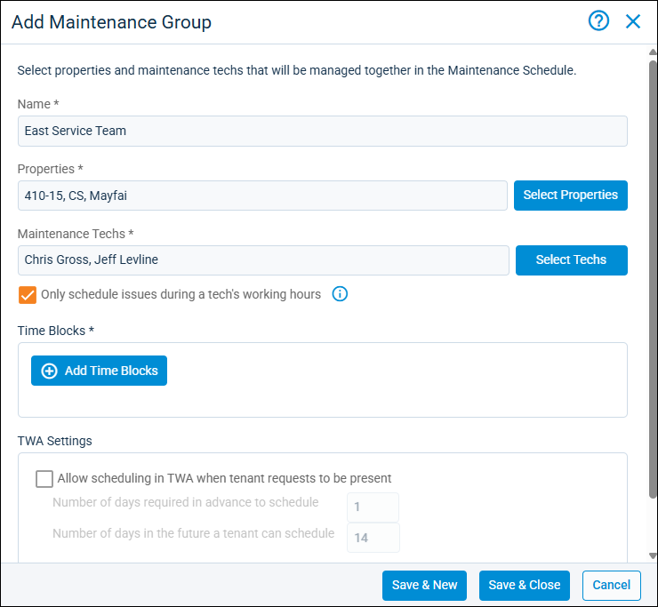
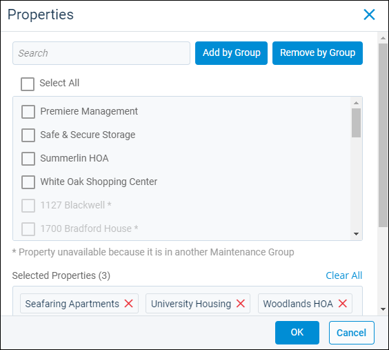
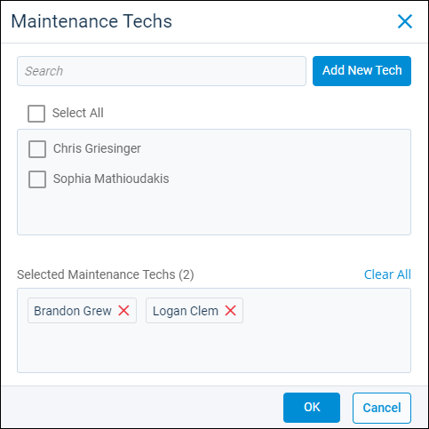
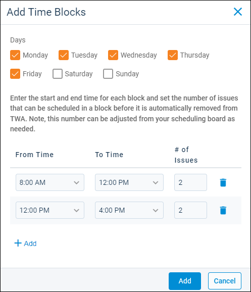

Source: https://rmxhelp.rentmanager.com/Topics/Express/Other/Maintenance-Add-Group.htm
Add a Maintenance Group
With the Maintenance Schedule feature, you can group properties and maintenance technicians together on one maintenance schedule, making it easier to view tech availability and schedule service visits. If you manage maintenance for properties in multiple locations, you can create maintenance groups so that only those techs who are associated with each property display in your scheduling calendar. If your maintenance technicians work at multiple properties, you can also create maintenance groups to make sure that all available techs for locations are given work assignments.
More Information
This feature is licensed and must be purchased separately. For more information, contact your sales representative at sales@rentmanager.com.
Related Privileges
| Group | Privilege | Column |
|---|---|---|
| Service Manager | Maintenance Groups | Add, View |
For more information, refer to Control User Access.
Step 1: Create a Group and Select Properties
To begin the process of creating a new maintenance group, do the following:
-
Go to
 arrow_forward Services arrow_forward
arrow_forward Services arrow_forward  Service Setup arrow_forward Service Manager arrow_forward Maintenance Groups.
Service Setup arrow_forward Service Manager arrow_forward Maintenance Groups.
The Maintenance Groups page displays. -
Click
 re: this Add Maintenance Group.
re: this Add Maintenance Group.
-
In the Name field, enter the name to use for this maintenance group.
-
To the right of the Properties field, click Select Properties.

-
Check all applicable properties from the list, or click Add by Group to add properties that are part of a property group. Properties can only be added to one maintenance group.
-
Click OK.
The Properties pop-up closes, and the chosen properties are added to the Add Maintenance Group pop-up in the Properties field.
Step 2: Select Maintenance Technicians
To add maintenance technicians to the maintenance group, do the following:
-
On the Add Maintenance Group pop-up, click Select Techs.

-
Check the applicable maintenance techs from the list.
Alternatively, click Add New Tech to create a new maintenance tech profile for a user. For more information on how to add hours for any maintenance tech profiles added on this pop-up, refer to Add Maintenance Techs. -
Once all the techs are selected, click OK.
The Maintenance Techs pop-up closes, and the chosen techs are added to the Add Maintenance Group pop-up in the Maintenance Techs field. -
Optionally, check the Only schedule issues during a tech's working hours field. If checked, issues can be assigned to technicians only during their scheduled hours. If unchecked, issues can be assigned to technicians anytime, regardless of their scheduled hours.
Step 3: Add Time Blocks
Once the properties and techs are assigned to the group, the next step is to add the time blocks maintenance techs can be scheduled for each day of the week. To set up the maintenance group's time blocks, do the following:
-
On the Add Maintenance Group pop-up, click
 Add Time Blocks.
Add Time Blocks.
-
In the Days field, check the days of the week for which the hours selected in the From Time and To Time columns apply.
-
In the From Time column, select the time at which the maintenance techs' availability for this maintenance group begins on the days checked in the Days field.
-
In the To Time column, select the time at which the maintenance techs' availability for this maintenance group ends on the days checked in the Days field.
-
If applicable, click
Add to add additional hours. For example, if the techs are scheduled for different hours on Mondays and Tuesdays, you can first set hours for Mondays, then click Add to set different hours for Tuesdays. -
In the # of Issues column, enter the maximum number of issues that can be added to this time block before it is removed from the schedule. For example, if you enter 2, after two issues are scheduled in the time block, no more maintenance visits can be scheduled for the time block.
-
When finished adding hours, click Add.
The Add Time Blocks pop-up closes, and the hours are added to the Add Maintenance Group pop-up in the Time Blocks section.
Step 4: Choose TWA Settings
In the TWA Settings section, you can optionally choose to allow tenants who want to be present for the maintenance to pick their own time windows in Tenant Web Access (TWA). By default, this option is not enabled, and tenants cannot choose their preferred time slots.
More Information
The system web preference to Allow Tenant to Create Service Issues must be enabled for you to be able to set up TWA settings in this section. For information, refer to Tenant Web Access Service Issues (System Web Preferences).
To enable this option, check Allow scheduling in TWA when tenant requests to be present and enter the following information:
| Field | Description |
|---|---|
|
Number of days required in advance to schedule |
The number of days before the requested maintenance time window that tenants must schedule if they want to be present for the maintenance. |
|
Number of days in the future a tenant can schedule |
The maximum number of days in advance that tenants can schedule if they want to be present for the maintenance. Time slots that are further into the future than this number of days from today's date do not display for tenants. The maximum number of days that can be entered in this field is 90. |
After all information is entered, click Save to complete the maintenance group creation process and close the pop-up. Alternatively, click Save & New to finish adding this maintenance group and continue adding another maintenance group.